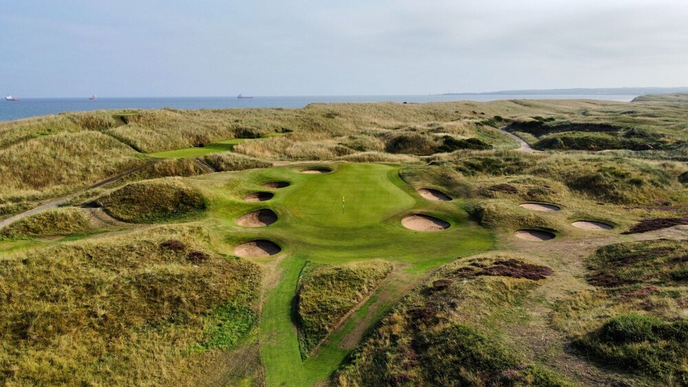

Planning your trip
If you are thinking about visiting Aberdeen in the near future. Here are a few ideas to get you started:
- Take a tour round Aberdeen FC's Pittodrie Stadium
- Perhaps a visit to one of the many castles in the area
- A round of golf at one of the many fantastic courses
No matter the time of year, remember to take a jacket!

Seating 20,886. It was the first all-covered all-seater stadium in Britain and was first used in 1899.

Dunnotar Castle
Constructed along the coast and within 30 minutes drive of Aberdeen. Dunnotar castle is a perfect place to visit during your time here.

Royal Aberdeen Golf Club
A fine example of the standard of golf course here in the North East. Royal Aberdeen Golf Club was founded in 1780 and claims to be the 6th oldest golf club in the world.